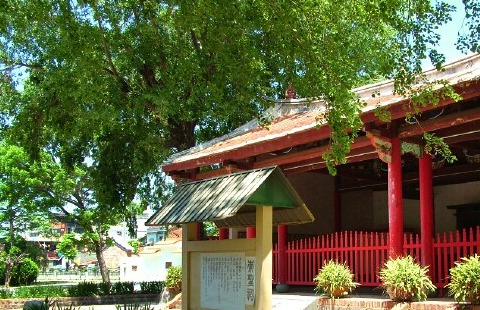

第五個景點-左營
蓮池潭風景區
位於左營東側的蓮池潭，舊稱「塘底」，湖面佔地約75公頃，潭長1.4公里、寬400公尺，
清朝時這裡為鳳山縣文廟的天然泮池，因為每每夏季蓮花盛開，蓮香四溢，在當時又稱之為「泮水荷香」，更成為清代的鳳山八景之一。
蓮池潭風景區內處處是風景名勝，像是九曲橋、春秋御閣、龍虎塔、啟明堂、孔廟、五里亭、啟明堂都是著名的觀光勝地，
不論是那一個季節，這裡隨時都有秀麗的景致，令人忘情於山水之間。

舊城孔子廟崇聖祠
早期鳳山縣並沒有孔廟，康熙23年(1686)當時的知縣楊芳聲在興隆莊設文廟，在左營舊城外設明倫堂，是當時鳳山縣的教育中心，
舊城孔子廟崇聖祠位於舊城國小內，前有蓮池潭，遠處亦有打鼓山、半屏山，近處即是龜、蛇二山，是個地靈人傑之寶地。
知縣宋永清、李丕煜曾於康熙43年(1704)、康熙58年(1719)分別整修，乾隆17年(1752)知縣吳士元再度重修，
乾隆51年發生了林爽文事件使舊城孔子廟受到破壞，直至日治時期，日本人在廟內興建「舊城公學校」也就是現今的舊城國小，
原有的廟貌再度受到破壞，目前僅剩「崇聖祠」以及從附近各地收集而來的十一方石碑。
崇聖祠尚且保留了前清風格的「三通五瓜」式屋架，屋脊上有龍形陶偶及清代葫蘆脊飾，
一旁的老檀樹，伴隨崇聖祠至今已有兩百多歲，目前聖祠已被國家列為三級古蹟。

連到首頁
連到第2頁
連到第3頁
連到第4頁